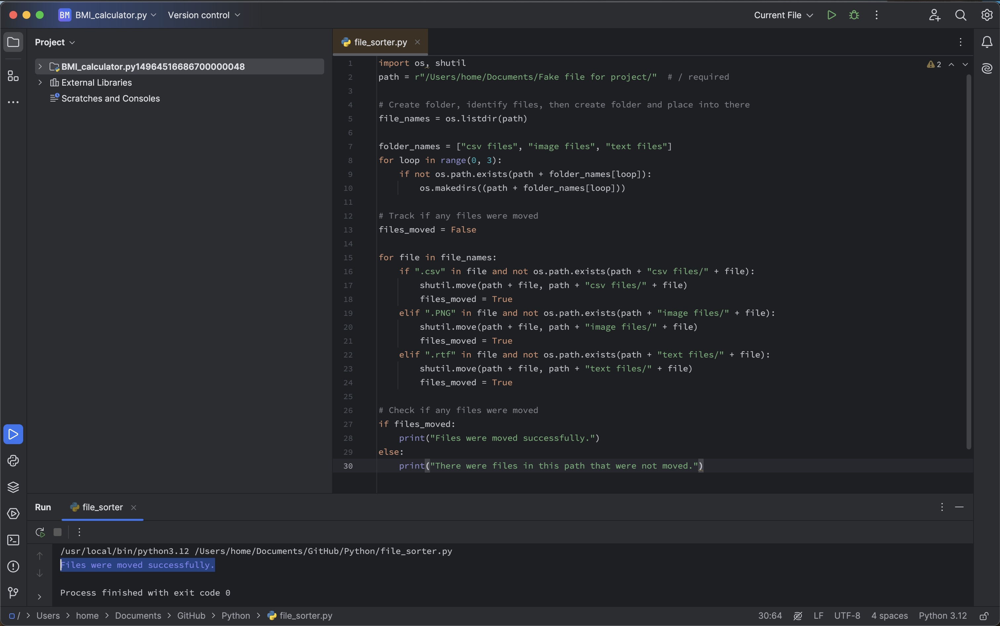
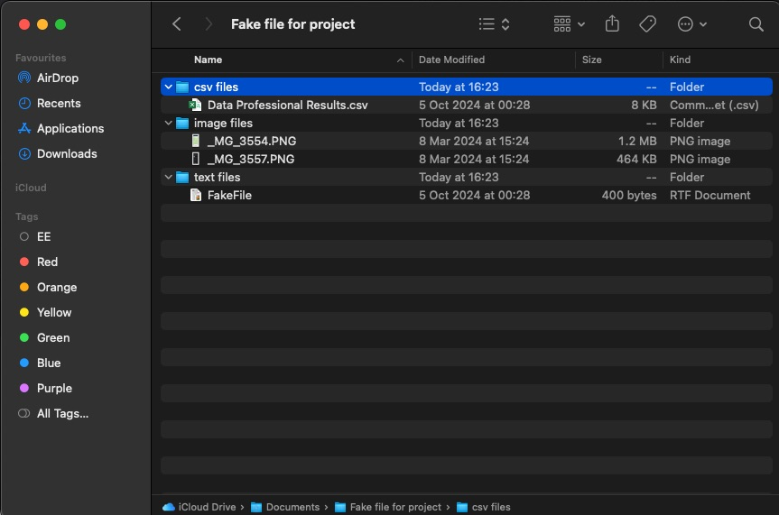

File Handling -
File Organisation
GitHub File: Press Here
Overview:
This project focuses on automating the organisation of various file types (CSV, images, text files) into separate folders to streamline data analysis workflows. Proper file organisation is crucial for effective data management and enhances productivity in analysis tasks.
Key Skills Used:
• File Handling: Using Python's os and shutil libraries for file management
• Data Organisation: Categorising files based on their types to improve data accessibility
• Automation: Streamlining repetitive tasks to save time and minimise errors
Code Description:
The code identifies files in a specified directory and sorts them into designated folders based on their file types. It tracks whether any files were moved successfully, which enhances the user experience and efficiency in file management. This automation can significantly save time when dealing with large datasets.
Why This Project is Worth Doing:
• This project introduces important concepts of file handling in Python, which is essential for data organisation in data analysis.
• It provides practical experience in automating mundane tasks, allowing data analysts to focus on analysis rather than file management.
• Enhances skills in Python libraries that are crucial for handling data effectively.
Step-by-Step Guide for File Organiser:
- Identify Files: The program lists all files in the specified directory.
- Create Folders: Automatically creates folders based on file types if they do not already exist.
- Move Files: Sorts files into respective folders based on their extensions.
- Track File Movement: Checks if any files were successfully moved and provides user feedback.


CONCLUDING REMARKS
Working on this file-handling project deepened my understanding of automating tasks that are crucial in data management workflows. By using Python libraries such as os and shutil, I gained valuable experience in file organisation—an essential skill for any data analyst dealing with large datasets. Automating the sorting of different file types into designated folders significantly improves data accessibility and efficiency, allowing for faster analysis. This project helped me realise the importance of optimising file management processes, which in turn saves time for more critical data tasks. The ability to automate repetitive workflows is a powerful tool that translates directly to real-world work environments.